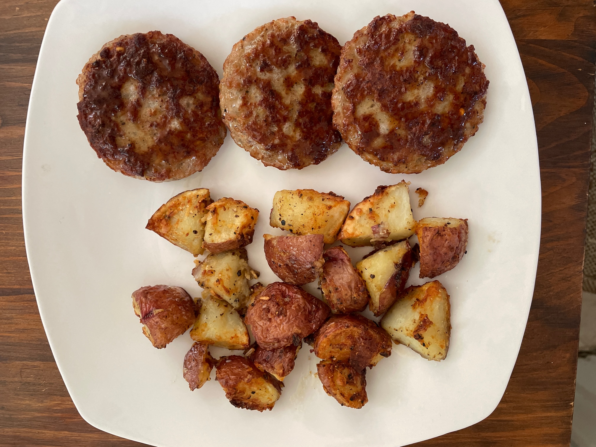

A recipe for tasty breakfast potatoes that doesn't take forever or make a mess
Ingredients
- Four medium-sized potatoes, preferably red
- Salt, preferably coarse and kosher
- Garlic powder
- Dried, chopped onions
- Freshly-ground black pepper
- Your best olive oil
- Apple cider vinegar
Steps
- Slam potatoes onto counter top. Stab four times each with a knife.
Pop in the microwave for 2 minutes, flip after one minute.
You want the potatoes to cook a little bit, but not so much that they fall apart when slicing
- Slice potatoes into 2 inch quarters, and put into a plastic soup tub you kept from Chinese takeout.
- Drizzle potatoes in oil, add salt, garlic powder, pepper, chopped onions, and splash of the vinegar.
Add lid and shake. Flip upside-down and twist container to thoroughly coat.
Feel free to add more dried onion to really coat them
- Pour potatoes into airfryer. May depend on the size of your airfryer, but don't pile the potatoes more than two deep or the potatoes won't cook evenly.
Set to 400 degrees for 15 minutes, or until deep, golden brown.
- Pour potatoes onto a serving plate, and enjoy with discount sausage patties.